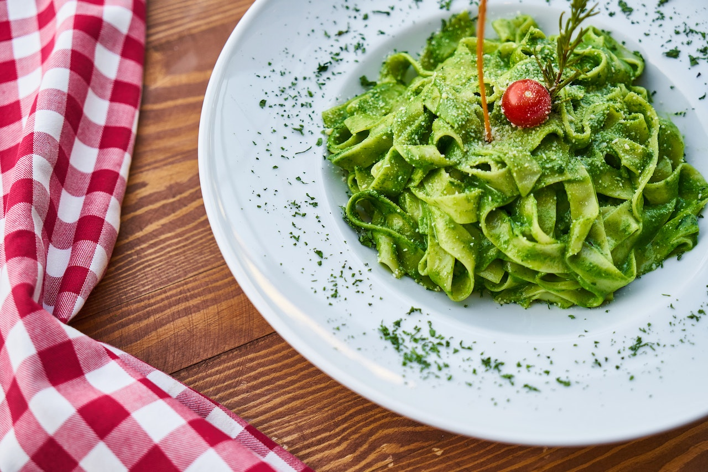

CARDÁPIO
|  |  |
 |
|---|---|---|
| Macarrão liso com molho verde e tomate cereja | Macarrão Penne com molho branco, frango e bacon | Macarrão liso com tomates e bacon |
| Saboroso macarrão liso com molho verde composto por Espinafre e Rúcula, acompanhado de tomate cereja e um leve toque de orégano. Aproximadamente 300 gramas. | Delicioso macarrão tipo Penne com molho branco, acompanhado por frango e bacon cortados em cubos. Aproximadamente 300 gramas. | Excelente macarrão liso com um leve molho de tomate, acompanhado de bacon cortado em cubos. Aproximadamente 300 gramas. |
| Preço: R$ 24,00 | Preço: R$ 21,00 | Preço: R$ 18,00 | Peça já! | Peça já! | Peça já! |